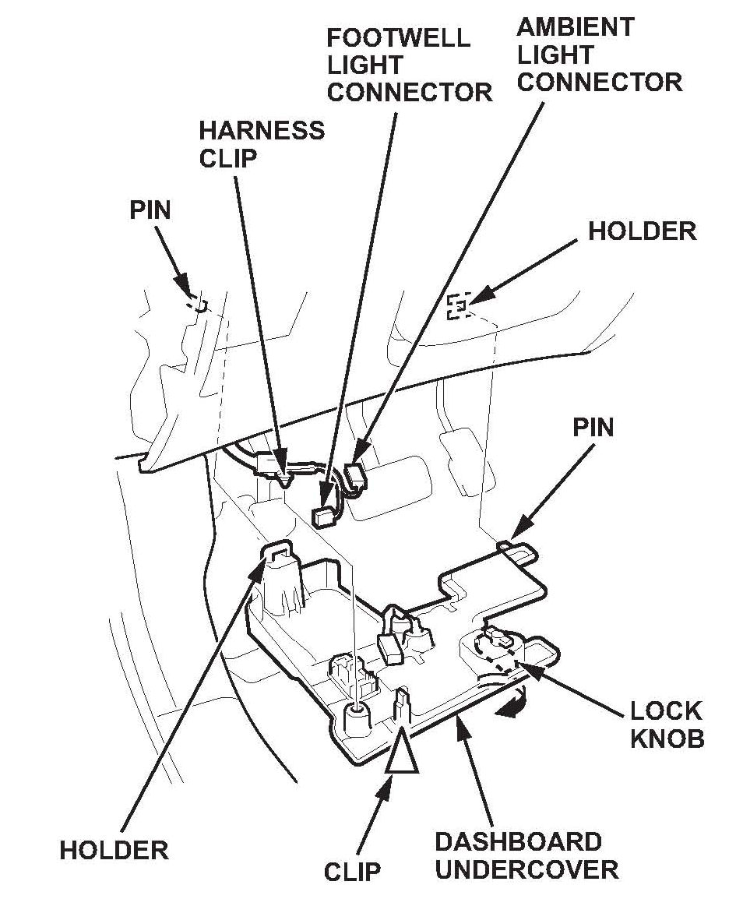

Electrical - VSA Indicator ON/Multiple DTC's Set
11-014June 17, 2011
Applies To:
2007-11 MDX - ALL
VSA Indicator or Trailer Stability Assist Warning Is On Intermittently with DTC 59-1, 66-1, 67-1, or 69-1, or Won't Come Out of Park
SYMPTOM
The VSA indicator or the trailer stability assist warning is on with DTCs 59-1, 66-1, 67-1, or 69-1, or you can't move the shift lever out of Park. The symptoms may be intermittent, and you may not be able to duplicate them after clearing the DTCs.
PROBABLE CAUSE
The brake pedal position switch is malfunctioning.
CORRECTIVE ACTION
Replace the brake pedal position switch.
PARTS INFORMATION
Brake Pedal Position Switch:
P/N 36750-TR2-A01
WARRANTY CLAIM INFORMATION
The normal warranty applies.
Operation Number: 7381A2
Flat Rate Time: 0.2 hour
Failed Part: P/N 36750-SJA-013
Defect Code: 03217
Symptom Code: 03205
Skill Level: Repair Technician
REPAIR PROCEDURE
1. Remove the driver's side dashboard undercover:
^ Unlock the dashboard undercover lock knob by turning it 90 degrees.
^ Gently pull down the rear edge of the undercover to detach the clip.
^ Disconnect the footwell light connector and the ambient light connector, then detach the harness clip.
^ Pull the undercover away to release the pins from the holders.
2. Unplug the 4P brake pedal position switch connector.
3. Turn the brake pedal position switch counterclockwise 45 degrees and remove it.
4. Remove the old brake pedal position switch insert (green) from the bracket.
5. Install the new brake pedal position switch insert (white) onto the bracket.
NOTE:
The green and white brake pedal position switch inserts are not interchangeable.
6. To set the gap of the brake pedal position switch, do this:
^ Lift up on the brake pedal by hand.
^ Push in the brake pedal position switch until its plunger is fully pressed (threaded end touching the pad on the brake pedal arm).
^ Turn the switch clockwise 45 degrees to lock it. The gap between the brake pedal position switch and the pad is automatically adjusted correctly.
7. Connect the 4P brake position switch connector.
8. Make sure the brake lights go off when the pedal is released.
9. Install the driver's dashboard undercover:
^ Reconnect the harness clip, the ambient light connector, and the footwell light connector.
^ Push up the dashboard undercover to connect the pins to the holders.
^ Gently push up the rear edge of the undercover to reattach the clips.

^ Re-lock the lock knob by turning it 90 degrees.

Disclaimer